Authors: C. Piquard, A. Veillon, Y. Sato, F. Zanichelli, A. Aassime, A. Cavanna, U. Gennser, A. K. Mitchell, A. Anthore, F. Pierre
Type: experiment · Category: strongly correlated electrons · PDF: https://arxiv.org/pdf/2605.00669v1
Analysis basis: full PDF text, analyzed in chunks
Topic relevance: 🔥 Kondo & dissipative impurity 5/5 · entanglement & information structure 2/5
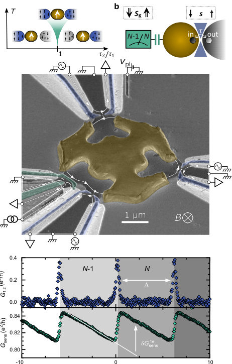
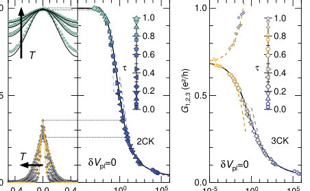
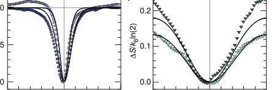
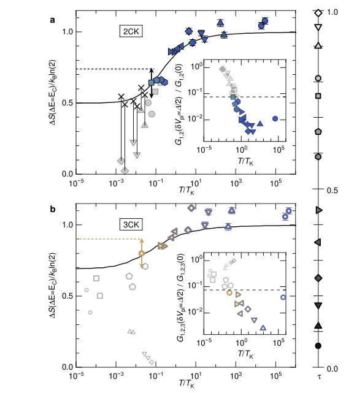
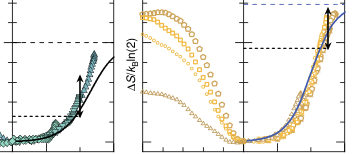
Summary. The researchers successfully measured fractional impurity entropy in two-channel and three-channel Kondo systems using a charge-sensing technique. These findings provide a direct thermodynamic fingerprint of non-Abelian anyons, specifically Majorana zero modes and Fibonacci anyons. This approach establishes entropy measurements as a powerful, model-independent tool for identifying exotic quantum states.
Why it may be interesting. The paper demonstrates a direct thermodynamic method to identify non-Abelian statistics through fractional entropy, which is highly relevant to the study of topological phases and many-body dynamics in correlated systems.
Main problem. The difficulty of unambiguously characterizing non-Abelian anyons, such as Majorana zero modes and Fibonacci anyons, using traditional transport measurements.
Main result. Experimental evidence of fractional entropy in two-channel and three-channel Kondo critical states, with scaling dimensions consistent with Majorana zero modes and Fibonacci anyons.
Method. Using a thermodynamic Maxwell relation to extract impurity entropy by measuring the temperature derivative of the island charge in a metal-semiconductor quantum circuit.
Model / system. A charge-Kondo circuit consisting of a micrometer-scale metallic island coupled to two or three electronic leads via quantum point contacts, implementing the multi-channel Kondo model.
Key observables. Island charge, differential conductance, impurity entropy change (Delta S), and Kondo temperature (TK).
Important parameters / regimes. Temperature (T), Kondo temperature (TK), transmission probability (tau), charging energy (EC), and gate-voltage detuning (delta Vpl).
Assumptions / limitations. The use of a 'frozen' impurity regime in the Coulomb valley to ensure residual entropy is negligible; the validity of the thermodynamic Maxwell relation for entropy extraction.
Figures summary. Figure 1 shows the quantum phase transition, charge-Kondo mapping, and circuit schematic. Figure 2 displays conductance vs. gate voltage. Figure 3 illustrates the entropy measurement process. Figure 5 shows the universal crossover flow of conductance and entropy.
Paper structure. The paper introduces the problem of anyon characterization, describes the experimental platform and charge-Kondo mapping, details the entropy extraction methodology, validates the device via conductance and scaling, and presents the final entropy measurements and comparison with NRG theory.
Unconventional quantum states defying the ubiquitous Fermi-liquid paradigm can emerge in the presence of strong electronic correlations. Among these, non-Abelian anyons - such as Majorana zero modes and Fibonacci anyons - are of particular interest for topological quantum computing due to their non-integer quantum dimensions d>1, which allows for protected non-local encoding and processing of quantum information. However, despite considerable efforts, the unambiguous characterisation of such anyons via transport measurements has proved challenging. Instead, here we provide experimental evidence for the low-temperature fractional entropy Delta S associated with a single anyon, which directly implies its non-Abelian character through the relation Delta S = kB ln(d). This thermodynamic signature is measured in metal-semiconductor quantum circuits engineered to realize quantum-critical states from frustrated interactions. Using a micrometre-scale metallic island coupled to two or three electronic leads, we tune the system to two-channel and three-channel Kondo critical points. By measuring the island charge and exploiting a thermodynamic Maxwell relation, we estimate the entropy associated with the anyons that emerge in these critical states. Our observations reveal fractional values, exposing non-Abelian anyons. The corresponding scaling dimensions are consistent with theoretical predictions for a Majorana zero mode Delta S = kB ln(sqrt(2)) and a Fibonacci anyon Delta S = kB ln(1 +sqrt(5))/2 for two and three channels. These findings establish entropy measurements as a powerful tool for characterizing exotic quantum states.
Authors: Ding Gu, Zhanpeng Fu, Zhong Wang
Type: theory · Category: statistical mechanics · PDF: https://arxiv.org/pdf/2605.00101v1
Analysis basis: full PDF text, analyzed in chunks
Topic relevance: 🔥 driven-dissipative phase transition 4/5 · 🔥 non-equilibrium dynamics 4/5 · Keldysh / 2PI / non-Gaussian methods 3/5 · methods for driven-dissipative 3/5 · non-equilibrium universality 3/5
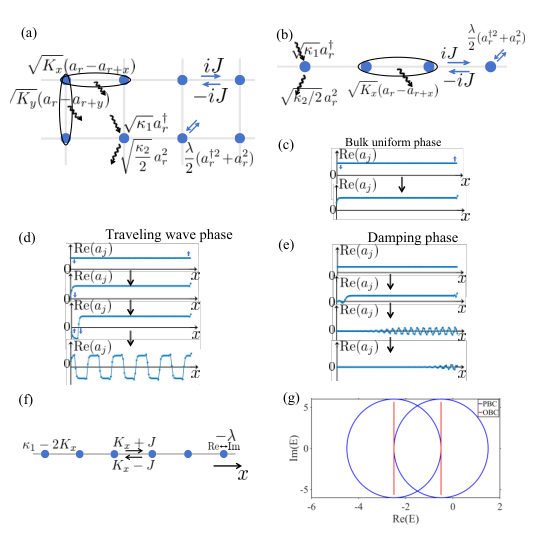
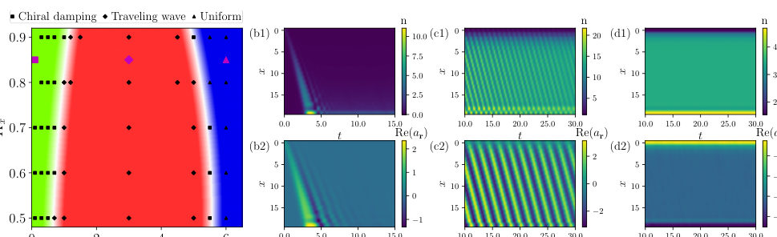
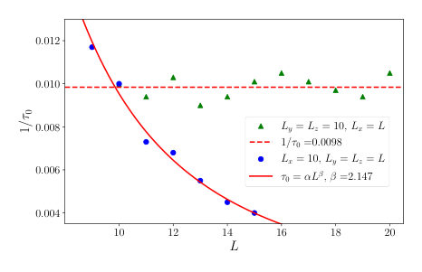
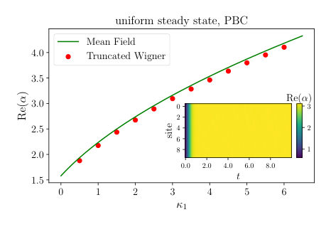
Summary. This paper demonstrates that nonreciprocity can create entirely new steady-state phases in open quantum systems, such as a traveling-wave phase of symmetry defects. It shows that while periodic systems exhibit standard symmetry breaking, open boundaries allow for chiral dynamics driven by the non-Hermitian skin effect. This work expands the understanding of how non-Hermitian physics can fundamentally alter the phase diagram of driven-dissipative matter.
Why it may be interesting. It provides a new mechanism for phase formation where spatial boundaries and nonreciprocity interact to create phases that are topologically or dynamically distinct from their periodic counterparts, directly impacting the study of non-equilibrium many-body dynamics.
Main problem. Investigating how nonreciprocity and the non-Hermitian skin effect (NHSE) can stabilize new non-equilibrium steady-state phases of matter beyond the standard spontaneous-symmetry-breaking paradigm.
Main result. The discovery of a boundary-induced 'traveling-wave phase' where nonreciprocity drives domain walls to form a persistent chiral wave, as well as a 'chiral damping phase' where local fluctuations are amplified by the NHSE.
Method. The study employs mean-field theory, linear stability analysis, and truncated Wigner simulations to characterize phase boundaries and fluctuation dynamics.
Model / system. A driven-dissipative bosonic model with Z2 symmetry, featuring a Lindblad master equation with nonreciprocal hopping (iJ), single-particle gain, and two-particle loss.
Key observables. Order parameter (expectation value of the bosonic field), density, and the autocorrelation function for coherence time.
Important parameters / regimes. Nonreciprocity strength (J), gain/loss parameters (kappa1, kappa2), and spatial boundary conditions (PBC vs OBC).
Assumptions / limitations. The continuum limit approximation neglects spatial variations of the time-derivative of the mean-field solution near domain walls; the Wigner method relies on truncating third-order derivative terms.
Figures summary. Figure 1 shows the model lattice and representative examples of the three OBC phases (uniform, traveling-wave, and damping) alongside the effective Hamiltonian spectrum. Figure S1 shows the time evolution and exponential decay of the autocorrelation function amplitude.
Paper structure. The paper introduces the model and the problem of nonreciprocity in steady states, presents the discovery of the traveling-wave and chiral damping phases under OBC, analyzes the role of the non-Hermitian skin effect, and concludes with a stability analysis of Goldstone-mode fluctuations using numerical simulations.
Nonreciprocity can profoundly alter the spectra and dynamics of open quantum systems, yet its impact on the long-time steady-state phases of matter has remained largely unexplored. Here we show that the interplay of nonreciprocity, symmetry defects, and spatial boundaries can generate phases beyond the standard spontaneous-symmetry-breaking paradigm. We demonstrate this mechanism by showing that sufficiently strong nonreciprocity turns boundaries into sources and drains of symmetry defects, while simultaneously endowing these defects with chiral dynamics in the bulk. As a result, the conventional uniform symmetry-broken state gives way to a domain-wall traveling-wave phase, in which symmetry defects form a persistent chiral wave. We showcase this mechanism in a bosonic model with \(Z_{2}\) symmetry, where periodic boundary conditions support only the conventional symmetric and symmetry-broken phases, whereas open boundary conditions allow the traveling-wave phase. We further show that even in the absence of symmetry breaking, the steady state can exhibit anomalous chiral relaxation: owing to the non-Hermitian skin effect in the stability matrix, local fluctuations are chirally amplified as they approach a boundary, where they eventually decay. Combining mean-field theory with truncated Wigner simulations, we characterize these phases, analyze the order parameter and Goldstone-mode fluctuations of the traveling-wave phase, and confirm its existence in three spatial dimensions.
Authors: Sakshi Bahamnia, Thomas Bilitewski
Type: theory · Category: other · PDF: https://arxiv.org/pdf/2605.00096v1
Analysis basis: full PDF text, analyzed in chunks
Topic relevance: 🔥 Rydberg arrays 4/5 · 🔥 entanglement & information structure 4/5 · analog quantum simulation 3/5 · exotic spin models in light-matter 3/5 · non-equilibrium dynamics 2/5
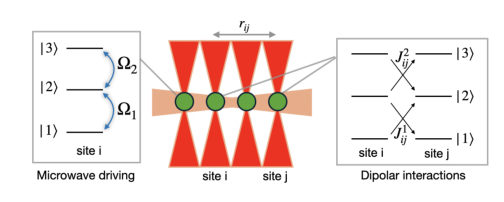
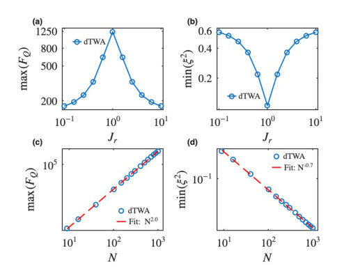
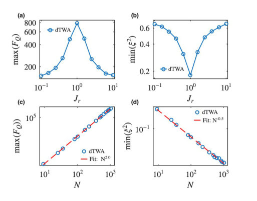
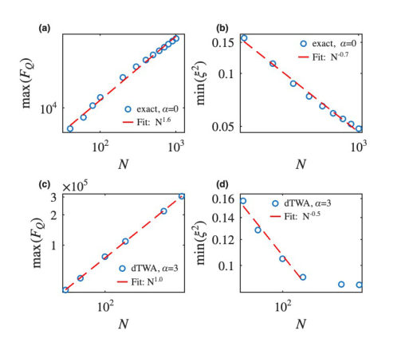
Summary. This paper explores how to generate scalable entanglement in three-level Rydberg atom arrays using dipole-dipole interactions. It shows that symmetric interactions lead to one-axis twisting-like squeezing, while antisymmetric interactions can produce more efficient two-axis countertwisting. These findings provide a theoretical foundation for using multi-level atoms in advanced quantum sensing applications.
Why it may be interesting. It extends well-known qubit-based squeezing protocols to qutrit systems and demonstrates how spatial interaction geometry (all-to-all vs. 2D dipolar) impacts the scalability of entanglement for quantum metrology.
Main problem. Investigating the generation of scalable spin-nematic (quadrupolar) squeezing and entanglement in multi-level (qutrit) Rydberg atom arrays.
Main result. The study identifies that symmetric interactions enable scalable squeezing via One-Axis Twisting (OAT) dynamics, while antisymmetric interactions with a microwave drive enable Two-Axis Countertwisting (TAT) mechanisms.
Method. The authors use Exact Diagonalization for all-to-all interaction models and the Discrete Truncated Wigner Approximation (dTWA) for 2D dipolar interaction simulations.
Model / system. A three-level (spin-1) system realized in arrays of Rydberg atoms in optical tweezers, featuring dipole-dipole interactions and microwave driving.
Key observables. Squeezing parameter (xi^2) and Quantum Fisher Information (FQ).
Important parameters / regimes. Interaction ratio (Jr), interaction range/decay (alpha), and system size (N).
Assumptions / limitations. The dTWA is used as a semiclassical approximation for large-scale 2D dynamics and is benchmarked against exact results.
Figures summary. Figure 1 provides a model overview of the Rydberg system; Figure 3 and 4 show squeezing and QFI scaling for the bright manifold under all-to-all interactions.
Paper structure. The paper introduces the three-level Rydberg model, analyzes the Hamiltonian decomposition into SU(2) subspaces for symmetric and antisymmetric regimes, presents scaling results for different interaction ranges, and validates the semiclassical approximation.
We study the generation of metrologically useful entanglement in a three-level (spin-1) system naturally realized in arrays of dipole-interacting Rydberg atoms confined in optical tweezers. In the spin-quadrupolar operator basis, the interaction Hamiltonian decomposes into effective SU(2) subspaces, within which quench dynamics from product initial states generate scalable spin-nematic squeezing. For symmetric interactions, we identify a mapping to effective one-axis twisting within bright and dark manifolds and demonstrate that the squeezing parameter scales as $ξ^{2}\propto N^{-2/3}$ ($ξ^{2}\propto N^{-0.5}$) with system size for all-to-all (two-dimensional dipolar) couplings. In both cases the quantum Fisher information reaches $F_Q\propto N^{2}$. For antisymmetric interactions supplemented by a microwave drive we find a distinct two-axis countertwisting mechanism. This results in squeezing $ξ^{2}\propto N^{-0.7}$ for all-to-all interactions and moderate squeezing for dipolar interactions in 2D. Our results constitute a first theoretical step beyond the well-studied qubit setting toward scalable entanglement generation in qudit systems with dipolar interactions, directly relevant to current Rydberg tweezer experiments.
Authors: Zhi Li, Raz Firanko, Timothy H. Hsieh
Type: theory · Category: statistical mechanics · PDF: https://arxiv.org/pdf/2605.00088v1
Analysis basis: full PDF text, analyzed in chunks
Topic relevance: 🔥 entanglement & information structure 4/5 · driven-dissipative phase transition 3/5 · methods for driven-dissipative 3/5 · non-equilibrium dynamics 3/5 · non-equilibrium universality 2/5
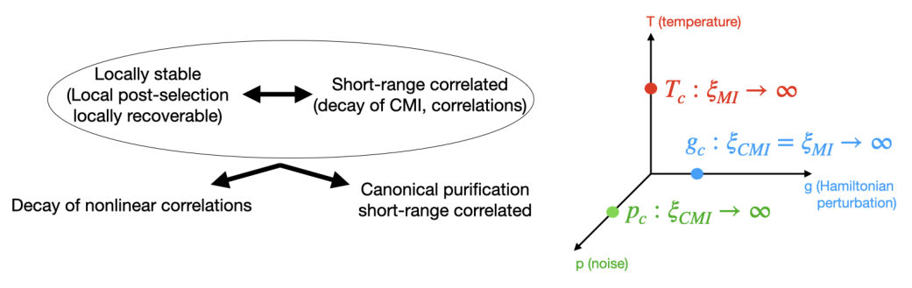
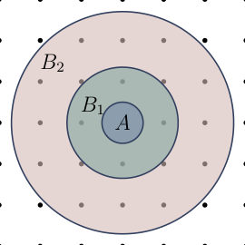
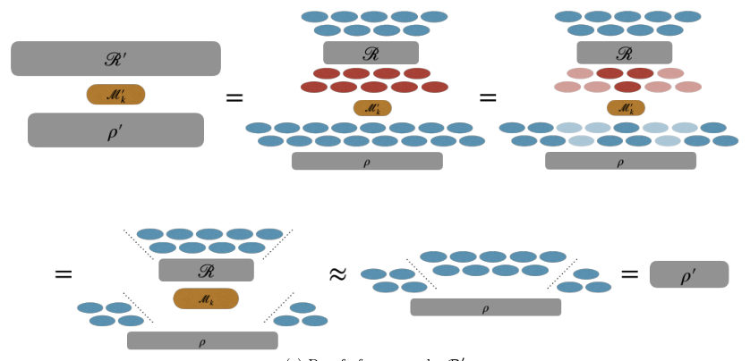
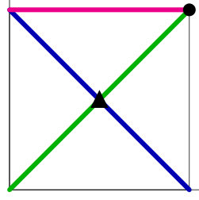
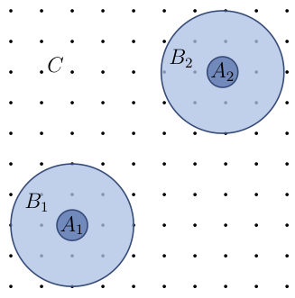
Summary. This paper proposes a new unified framework for characterizing phases of matter by defining 'locally stable states' through the lens of local recoverability. It proves that this operational definition is equivalent to the decay of correlations, effectively bridging the gap between pure and mixed state phase descriptions. The work also introduces a new family of nonlinear observables to diagnose non-equilibrium phases.
Why it may be interesting. It provides a rigorous, unified language for researchers studying open quantum systems and many-body dynamics by linking operational stability (recoverability) to structural properties (correlation decay) across different physical regimes.
Main problem. The lack of a unified framework to characterize phases of matter across equilibrium, non-equilibrium, and metastable regimes, specifically bridging the gap between pure and mixed state descriptions.
Main result. The authors establish that 'local stability' (the ability to reverse local operations via a local channel) is equivalent to 'short-range correlations' (decay of operator correlations and conditional mutual information), providing a unified definition for locally stable phases.
Method. The framework utilizes quantum information-theoretic tools including Petz recovery maps, Rényi divergences, and the analysis of quantum Markov chains and Lindbladian dynamics.
Model / system. Quantum many-body systems on D-dimensional lattices with local Hilbert spaces, including equilibrium Gibbs states, non-equilibrium steady states of local Lindbladians, and systems subject to local decoherence.
Key observables. Operator correlations, conditional mutual information (CMI), fidelity correlators, and a two-parameter family of nonlinear correlators (C_{p,q}).
Important parameters / regimes. Correlation length, Markov length, spectral gap of the Lindbladian, and the parameters (p, q) of the nonlinear observables.
Assumptions / limitations. The equivalence between local stability and short-range correlations is subject to technical constraints on the buffer region size and the dimensionality of the lattice.
Figures summary. Figure 1 maps different phase types to diagnostic measures; Figure 2 illustrates lattice partitioning for proofs; Figure 3 shows the schematic for phase invariance; Figure 5 illustrates lattice partitioning for nonlinear observables; Figure 6 shows the light-cone structure of recovery.
Paper structure. The paper introduces the concept of local stability, proves its equivalence to short-range correlations, demonstrates phase invariance under reversible circuits, develops a theory for nonlinear correlators, and concludes with applications to Lindbladian dynamics and counterexamples.
We propose a unifying framework for characterizing pure and mixed state phases of matter across equilibrium, non equilibrium, and metastable regimes. We introduce the concept of locally stable states, defined by the operational property that any local operation (including post selection) can be reversed by a local channel. We prove that local stability is equivalent to a state being short range correlated, defined by the decay of both correlations and conditional mutual information. We demonstrate that these properties are invariant under locally reversible channels, thus defining locally stable phases. Furthermore, we prove that local stability implies both the decay of a family of nonlinear correlators, including the fidelity correlator, and the decay of correlations in the canonical purification, thus bridging the gap between mixed and pure states. Along the way, we establish two results which may be of independent interest: we show that post-selection on locally stable (short range correlated) states can be implemented via local channels and that quantum Markov chains can be characterized by the local computability of nonlinear observables.
Authors: Lubashan Pathirana
Type: theory · Category: quantum information and computing · PDF: https://arxiv.org/pdf/2605.00157v1
Analysis basis: full PDF text, analyzed in chunks
Topic relevance: 🔥 methods for driven-dissipative 4/5 · entanglement & information structure 3/5 · non-equilibrium dynamics 3/5 · correlated / nonlocal dissipation 2/5 · driven-dissipative phase transition 2/5
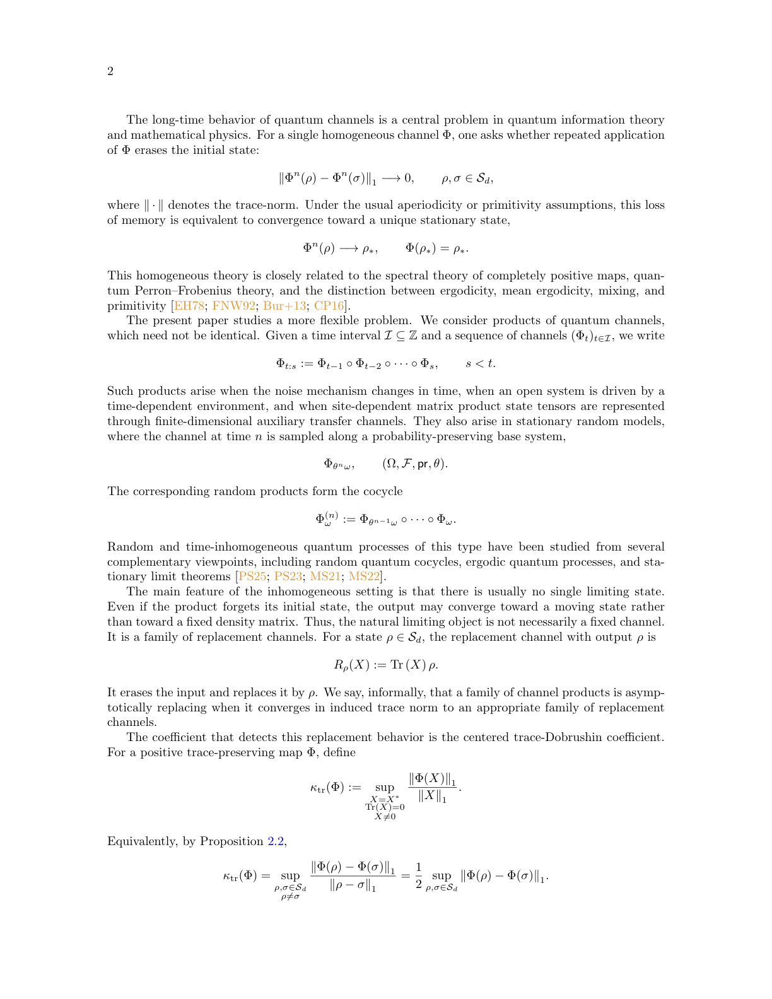
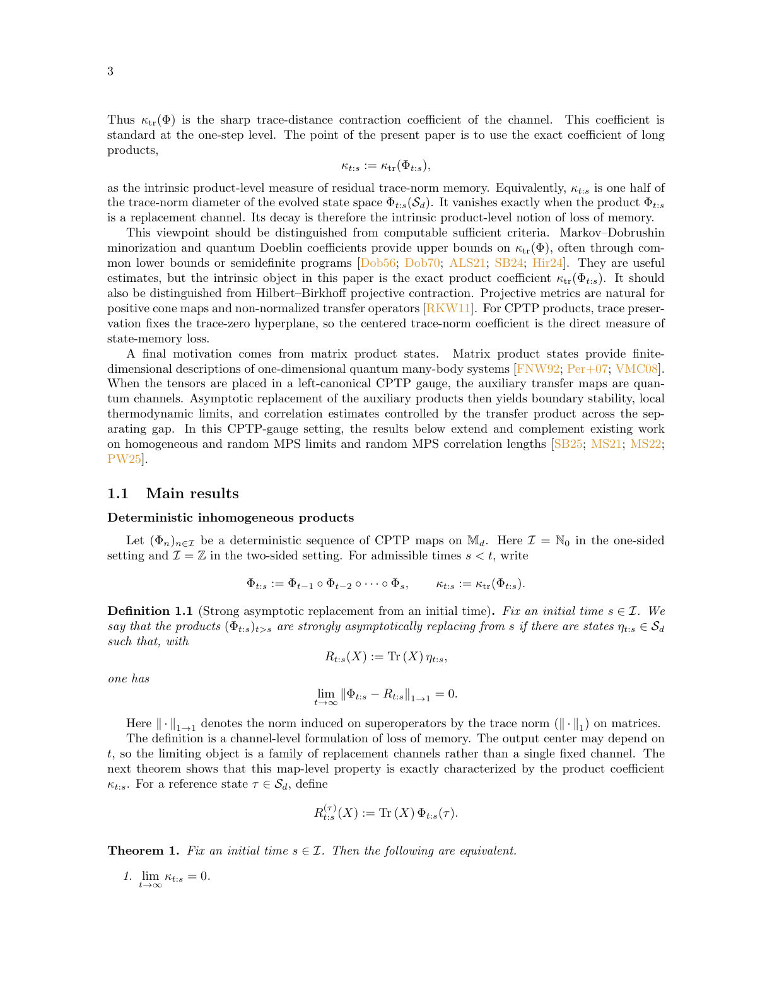
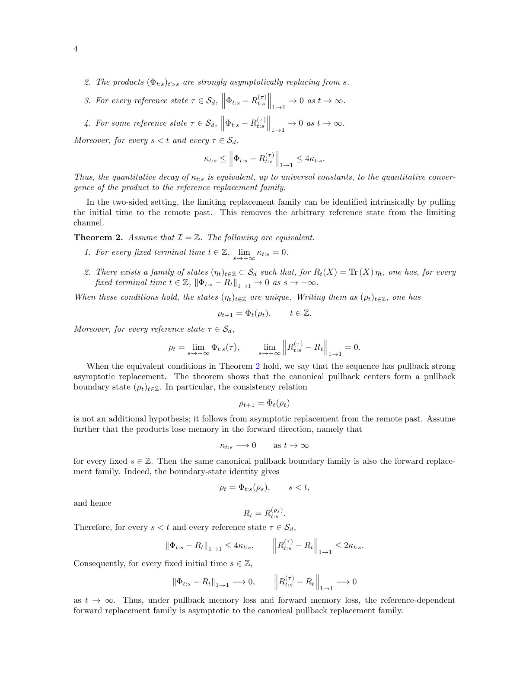
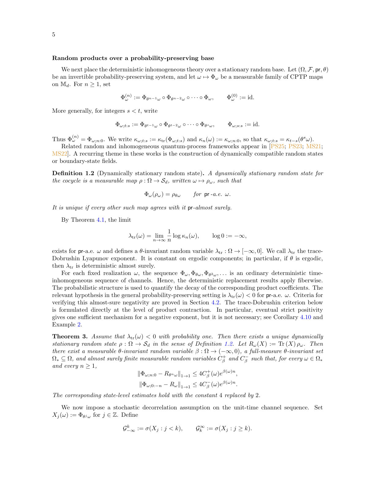
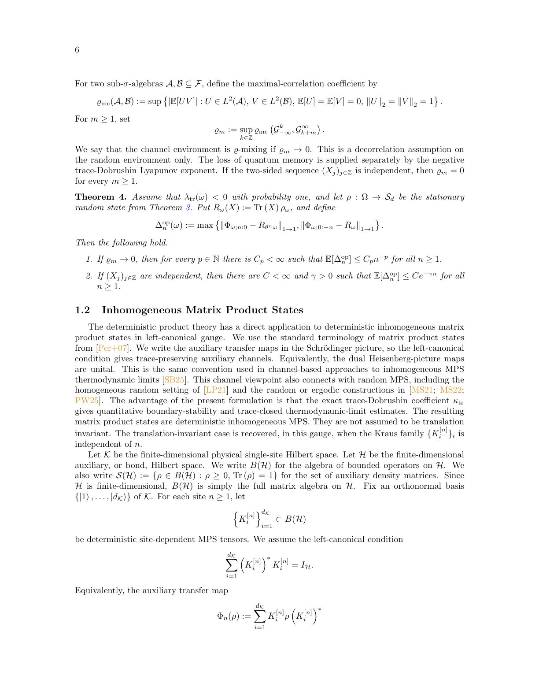
Summary. This paper provides a rigorous mathematical framework for understanding how sequences of different quantum channels forget their initial states. It proves that the decay of a specific contraction coefficient determines whether channels converge to a replacement family, and shows how these dynamics translate to the stability and correlation decay in random Matrix Product States.
Why it may be interesting. This work is highly relevant for researchers in open quantum systems and many-body dynamics as it provides rigorous quantitative bounds on how environmental noise and time-dependent dynamics lead to the loss of initial state memory and the emergence of unique steady-state behaviors in many-body systems.
Main problem. Investigating the asymptotic behavior and memory loss of products of non-identical (inhomogeneous) and random quantum channels, and applying these results to the stability and correlation decay of Matrix Product States (MPS).
Main result. The paper establishes that the decay of the trace-Dobrushin coefficient is equivalent to the asymptotic replacement of channels by a moving replacement family, and proves that a negative Lyapunov exponent leads to exponential convergence and spatial clustering in random MPS.
Method. The authors develop a product-level trace-Dobrushin theory using contraction coefficients, ergodic theory (Lyapunov exponents), and transfer map formalism to analyze both deterministic and random CPTP cocycles.
Model / system. The study focuses on finite-dimensional Completely Positive Trace-Preserving (CPTP) quantum channels, specifically sequences of inhomogeneous channels and stationary random quantum cocycles, with applications to inhomogeneous Matrix Product States (MPS) in the left-canonical gauge.
Key observables. Trace-norm distance, trace-Dobrushin coefficient, trace-Dobrushin Lyapunov exponent, and connected correlation functions of local observables.
Important parameters / regimes. Trace-Dobrushin coefficient (kappa_tr), Trace-Dobrushin Lyapunov exponent (lambda_tr), and the rho-mixing profile of the channel environment.
Assumptions / limitations. The theory assumes finite-dimensional Hilbert spaces, CPTP maps, and specifically for the MPS application, the left-canonical gauge; random results require a negative Lyapunov exponent almost surely.
Paper structure. The paper begins by developing a product-level trace-Dobrushin theory for deterministic channels, extends these results to two-sided products and pullback convergence, then moves to random quantum cocycles using ergodic theory, and concludes by transferring these estimates to the study of inhomogeneous and random Matrix Product States.
We develop a product-level trace-Dobrushin theory for finite-dimensional quantum channel products and apply it to deterministic and stationary random inhomogeneous matrix product states in left-canonical CPTP gauge. For a product of channels, the centered trace-Dobrushin coefficient quantifies the residual dependence on the input state, and its decay is the criterion for trace-norm forgetting. In the deterministic setting, this decay is equivalent to asymptotic replacement by a moving replacement channel. For two-sided products, pullback forgetting produces a unique boundary state, which determines the canonical replacement family. For stationary random CPTP cocycles, submultiplicativity of the product coefficient yields a trace-Dobrushin Lyapunov exponent. We prove that the almost sure negativity of this exponent is equivalent to quenched trace-norm memory loss and gives exponential forward and pullback convergence to a unique dynamically stationary random replacement channel. When the \(\varrho\)-mixing profile of the channel environment tends to zero, we obtain annealed super-polynomial estimates, while independence gives annealed exponential estimates. Finally, we transfer these estimates to inhomogeneous matrix product states whose auxiliary transfer maps are CPTP. These channel estimates transfer to deterministic and stationary random inhomogeneous MPS, giving infinite-volume limits of trace-closed finite-volume states, quantitative boundary stability, and correlation bounds governed by the same auxiliary product coefficients.
Authors: Maxwell D. Aiello, Janis Smits, Yaser Silani, Andris Berzins, David Lidsky, Bryan A. Richards, Amilcar Jeronimo Perez, Chandrasekhar Ramanathan, Sebastián C. Carrasco, Jabir Chathanathil, Michael Goerz, Vladimir Malinovsky, Dmitry Budker, Sean Lourette, Andrey Jarmola, Victor M. Acosta
Type: experiment · Category: other · PDF: https://arxiv.org/pdf/2605.00152v1
Analysis basis: full PDF text, analyzed in chunks
Topic relevance: 🔥 QC/QI experiment 4/5 · 🔥 spintronics-quantum-optics interface 4/5 · non-equilibrium dynamics 2/5 · quantum measurements 2/5 · quantum optics experiment 2/5
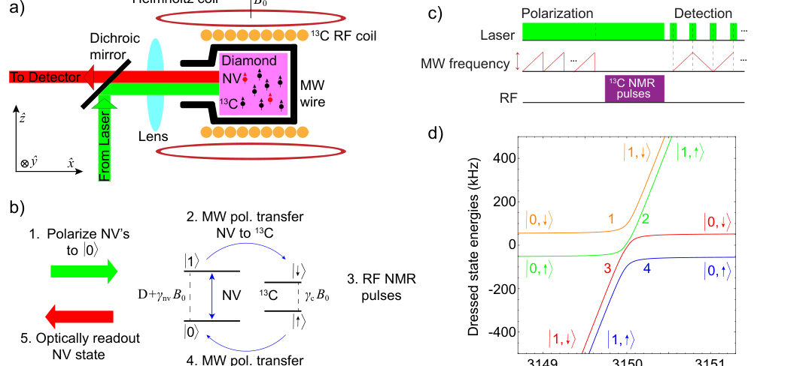
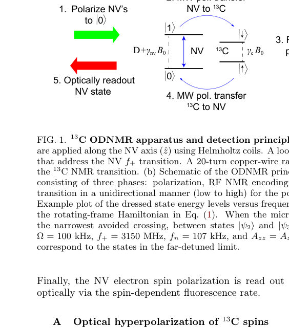
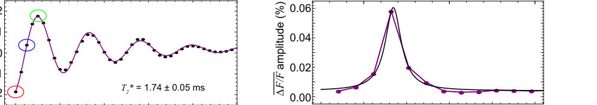
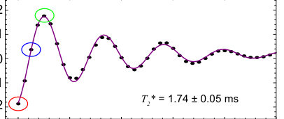
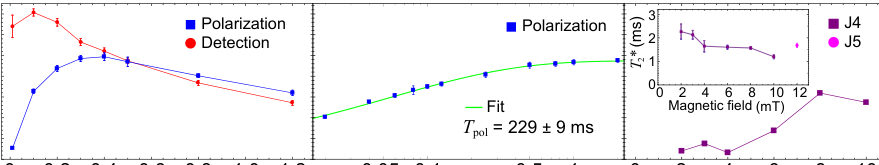
Summary. The researchers developed a technique to optically detect the NMR signal of massive 13C nuclear spin ensembles in bulk diamond using NV centers. By using microwave frequency sweeps to transfer polarization, they achieved high-contrast readout at low magnetic fields. This work provides a scalable platform for high-sensitivity quantum sensing and precision measurements.
Why it may be interesting. The paper explores the dynamics of a large-scale spin bath coupled to a quantum sensor, involving non-equilibrium polarization transfer, diabatic transitions, and the interplay between electron and nuclear spin relaxation in a disordered solid-state environment.
Main problem. Achieving high-sensitivity, low-field, and room-temperature Optically Detected Nuclear Magnetic Resonance (ODNMR) of large ensembles of 13C nuclear spins in bulk diamond for applications in fundamental physics and inertial sensing.
Main result. Demonstrated successful 13C Ramsey spectroscopy in bulk diamond with a nuclear-spin-dependent fluorescence contrast exceeding 0.5% and identified the dominant dephasing source as the longitudinal relaxation of nearby NV centers.
Method. Uses microwave frequency sweeps to induce state-selective Landau-Zener transitions that bidirectionally transfer polarization between NV electron spins and 13C nuclear spins, followed by RF pulses for NMR encoding and optical readout of the NV state.
Model / system. Bulk diamond with natural abundance (1.1%) 13C and low nitrogen density (0.5-10 ppm), utilizing Nitrogen-Vacancy (NV) centers as sensors interacting with 13C nuclear spin ensembles.
Key observables. 13C NMR frequency, fluorescence contrast (delta F/F), nuclear spin dephasing time (T2*), and polarization buildup rate.
Important parameters / regimes. Magnetic fields of 8-20 mT, 13C gyromagnetic ratio of 10.7 MHz/T, NV zero-field splitting of 2.87 GHz, and nuclear spin dephasing times of ~1.74 ms.
Assumptions / limitations. The method assumes that the 13C nuclear spin diffusion and the longitudinal relaxation of NV centers are the primary drivers of the observed signal dynamics.
Figures summary. Figure 1 shows the ODNMR apparatus schematic; Figure 4 displays Ramsey interferograms, Hahn-echo, and WAHUHA decay curves; supplementary figures show polarization buildup and laser-induced depolarization effects.
Paper structure. The paper introduces the need for low-field NMR, describes the experimental setup and the polarization transfer mechanism via Landau-Zener transitions, presents results for Ramsey spectroscopy and dephasing, analyzes the impact of laser power and magnetic field, and concludes with sensitivity estimates.
Precision measurements based on optically detected nuclear magnetic resonance offer exquisite sensitivity to absolute shifts in spin transition frequencies, with potential applications in fundamental physics experiments and inertial sensing. We investigate 13C nuclear spins in diamond as a candidate system for solid-state implementations, which hold the promise for high-fidelity readout of large numbers of coherent nuclear spins in millitesla or lower magnetic fields. We demonstrate a technique that allows for both optical polarization and readout of large ensembles of ~10^{16} polarized nuclear spins. Our method takes advantage of state-selective Landau-Zener transitions under microwave frequency sweeping, which bidirectionally transfer spin polarization between Nitrogen-Vacancy (NV) electron spins and remote 13C nuclear spins. Using natural isotopic abundance diamonds with nitrogen densities of ~0.5-10 ppm, we perform optically-detected 13C Ramsey spectroscopy and realize a nuclear-spin-dependent fluorescence contrast exceeding 0.5% peak-to-peak. We observe nuclear spin dephasing times T2*~2 ms that only modestly improve with homonuclear dipolar decoupling, indicating that they are limited by the longitudinal spin relaxation of nearby NV electron spins. We study the magnetic field dependence of the optical readout and find comparable contrast and dephasing times for magnetic fields in the range 8-20 mT. Our method can be interpreted as a type of repetitive readout, where each NV center optically reads out the spin state of ~100 nuclei before nuclear spins depolarize.
Authors: Achilleas Lazarides
Type: theory · Category: disordered systems and neural networks · PDF: https://arxiv.org/pdf/2605.00091v1
Analysis basis: full PDF text, analyzed in chunks
Topic relevance: 🔥 entanglement & information structure 4/5 · 🔥 scars & prethermalization 4/5 · non-equilibrium dynamics 3/5 · non-equilibrium universality 2/5
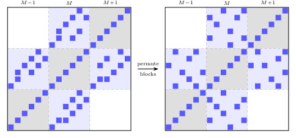
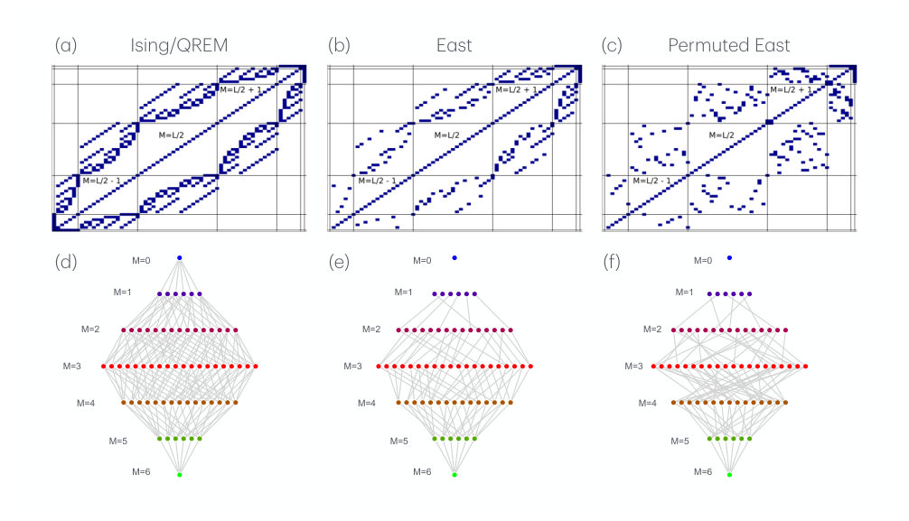
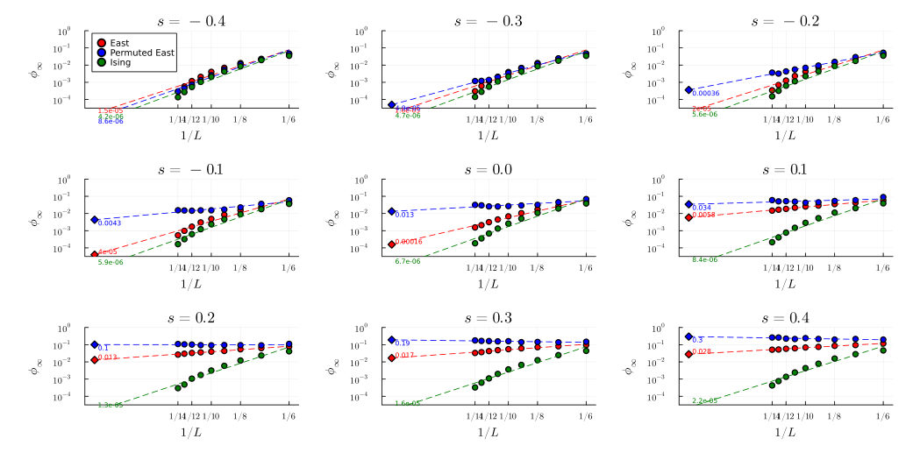
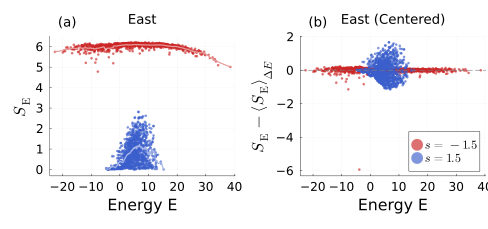
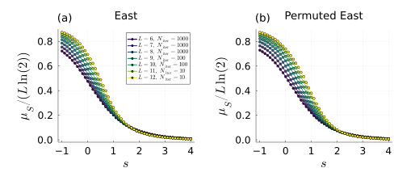
Summary. The paper demonstrates that the localization transition in East-type models is determined by the connectivity structure in Fock space rather than real-space locality. By scrambling the real-space connections while keeping the magnetization-sector structure intact, the authors show that the phase transition remains qualitatively unchanged. This implies that the hierarchical organization of the Fock-space graph is the primary driver of localization in these constrained systems.
Why it may be interesting. This is highly relevant for many-body dynamics as it identifies that the topology of the Hilbert space graph, rather than physical distance, can be the fundamental driver of many-body localization and slow dynamics.
Main problem. The paper investigates whether the localization transition in East-type models is driven by real-space geometric locality or by the underlying connectivity structure in Fock space.
Main result. The study finds that the localization-delocalization transition persists even when real-space locality is removed via random permutations, suggesting that the hierarchical structure of the Fock-space graph is the essential ingredient for localization.
Method. The authors use a graph-theoretic framework to analyze the Hamiltonian and perform numerical simulations including finite-size scaling analysis of Shannon entropy and dynamical participation ratios.
Model / system. The study focuses on the Quantum East Model and a newly introduced 'Permuted East Model', which preserves magnetization-sector organization but randomizes connectivity in Fock space to remove real-space locality.
Key observables. Dynamical participation ratio, Eigenstate Shannon entropy, Shannon-entropy fluctuations, and Local spectral variance.
Important parameters / regimes. The hopping rate parameter (s) which controls the transition, system size (L), and the disorder parameter (w).
Assumptions / limitations. The analysis assumes that the connectivity in Fock space can be effectively modeled by random permutations while preserving the magnetization sector structure.
Figures summary. Figure 1 shows the construction of the permuted model; Figure 2 illustrates the Hamiltonian matrix patterns and adjacency graphs; Figure 3 shows the dynamical participation ratio scaling; Figure 4 shows Shannon entropy fluctuations; Figure 5 shows mean scaled Shannon entropy; Figure 6 shows local spectral variance and extrapolated transition points.
Paper structure. The paper introduces the problem of localization in constrained models, defines the permuted East model, presents numerical results comparing the standard and permuted models using various diagnostics, and concludes with an extrapolation to the thermodynamic limit.
Local kinetic constraints in quantum many-body systems can generate slow dynamics or complete many-body localisation. Here we focus on a modification of the quantum East model: Inspired by random matrix theory, we randomise the connectivity in Fock space (rendering it nonlocal in real space) while preserving its organisation into neighbouring magnetisation sectors. We find that there is still a transition between two distinct phases, one delocalised and the other localised. We conclude that, for East-type constrained models, the essential ingredient is the structure of the graph in Fock space rather than geometric locality of spin flips.
Authors: Saniya Shinde, Maximilian A. Weissflog, Shaun Lung, Elkin A. Santos, Jinyong Ma, Tongmiao Fan, Anna Fedotova, Sina Saravi, Andrey A. Sukhorukov, Frank Setzpfandt
Type: experiment · Category: quantum information and computing · PDF: https://arxiv.org/pdf/2605.00214v1
Analysis basis: full PDF text, analyzed in chunks
Topic relevance: 🔥 QC/QI experiment 4/5 · 🔥 quantum optics experiment 4/5 · entanglement & information structure 2/5 · interference shaping light 2/5
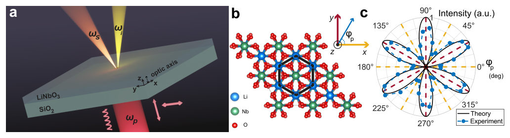
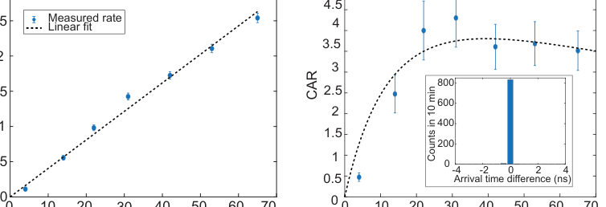
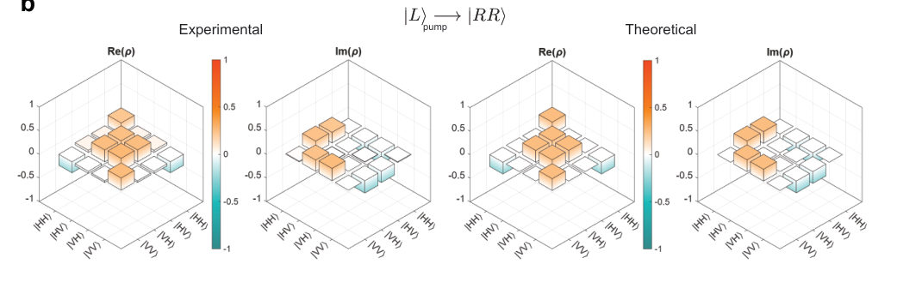
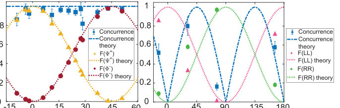
Summary. The paper presents a new method for generating tunable polarization-entangled photon pairs using thin-film lithium niobate. By exploiting the crystal's rotational symmetry, the researchers can switch between different Bell states and separable states just by changing the pump polarization. This approach offers a scalable and compatible alternative to traditional bulk crystals and 2D materials.
Why it may be interesting. This work is highly relevant to quantum optics and quantum information as it provides a new, scalable platform for generating tunable entanglement, which is a fundamental requirement for quantum communication and photonic quantum computing.
Main problem. The need for efficient, scalable, and tunable sources of polarization-entangled photon pairs for quantum technologies without the complexity of additional optical elements or the scalability issues of 2D materials.
Main result. Demonstrated a thin-film lithium niobate (TFLN) source that generates tunable polarization entanglement, ranging from maximally entangled Bell states to completely separable states, by simply varying the pump beam polarization.
Method. The researchers used spontaneous parametric down-conversion (SPDC) in z-cut lithium niobate thin films, employing quantum state tomography and second-harmonic generation to characterize the generated photon pairs.
Model / system. The experimental platform consists of an unstructured 8-micrometer thick z-cut lithium niobate (LN) film on a SiO2 substrate, utilizing the C3v crystal symmetry and d22 nonlinear tensor components.
Key observables. Photon-pair rate, Coincidence-to-Accidental Ratio (CAR), Concurrence (C), State Fidelity (F), and polarization density matrices.
Important parameters / regimes. Pump wavelength at 788 nm, signal/idler wavelengths at 1576 nm, and the use of the d22 nonlinear tensor component.
Assumptions / limitations. The method assumes the availability of high-quality thin-film lithium niobate fabrication and relies on the intrinsic C3v symmetry of the crystal.
Figures summary. Figure 1 shows the schematic of entanglement generation and the SHG intensity pattern; Figure 2 displays the experimental setup, SPDC rate vs. pump power, and CAR vs. pump power.
Paper structure. The paper introduces the motivation for scalable photon sources, describes the TFLN experimental platform and the physics of C3v-mediated entanglement, presents characterization via SHG and quantum state tomography, and concludes with future directions like hyperentanglement.
Entangled photon pairs play a major role in various modern technologies such as quantum imaging, communication, and computing. Conventional photon-pair sources are often based on spontaneous parametric down-conversion in bulk nonlinear crystals. Recent advances have also shown entangled photon-pairs from transition metal dichalcogenide thin-films, however, these materials are not widely available and are not compatible with existing fabrication capabilities. We present a new thin-film lithium niobate source of polarization-entangled photon pairs at the telecom wavelength that requires no additional optical elements for entanglement generation and allows for easy application using the existing lithium niobate fabrication technologies. We demonstrate tunable entanglement generation using the three-fold rotational crystal symmetry of lithium niobate, allowing the generation of different maximally entangled Bell states or completely separable states depending on the polarization of the pump beam.
Authors: Lisa Lenstra, Jasper van Wezel
Type: theory · Category: statistical mechanics · PDF: https://arxiv.org/pdf/2605.00485v1
Analysis basis: full PDF text, analyzed in chunks
Topic relevance: 🔥 quantum measurements 4/5 · entanglement & information structure 3/5 · methods for driven-dissipative 2/5 · non-equilibrium dynamics 2/5
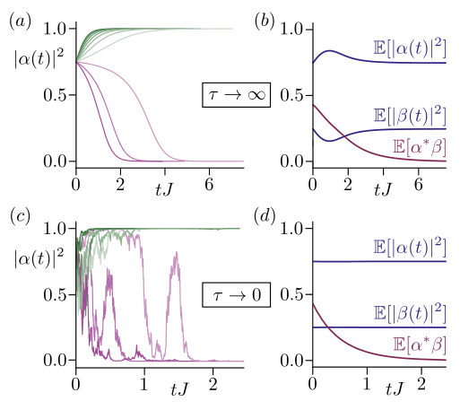
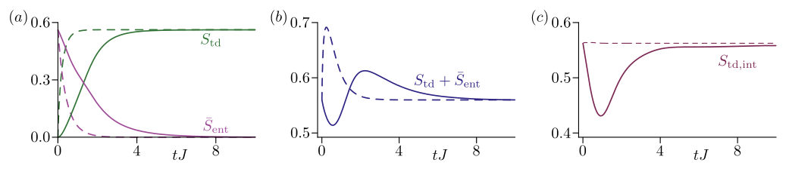
Summary. This paper explores how entanglement is transformed into thermodynamic entropy during objective quantum state reduction. It demonstrates that this conversion is not one-to-one and proposes that the non-monotonic evolution of local entropy can serve as a signature to distinguish state reduction from environmental dephasing.
Why it may be interesting. It provides a way to experimentally distinguish fundamental wave-function collapse models from standard decoherence by looking at thermodynamic signatures in the presence of correlated noise.
Main problem. Investigating the relationship between quantum entanglement and thermodynamic entropy during the process of objective quantum state reduction, specifically whether entanglement can be converted into thermodynamic entropy in a one-to-one fashion.
Main result. The authors show that entanglement entropy is not converted into thermodynamic entropy one-to-one, and that models with correlated noise provide a unique thermodynamic fingerprint (non-monotonic locally obtainable entropy) that distinguishes state reduction from environment-induced dephasing.
Method. The study uses ensemble averaging over stochastic trajectories of a non-linear, stochastic master equation to calculate the evolution of von Neumann and thermodynamic entropies.
Model / system. A bipartite entangled pure state (two degrees of freedom) evolving under an objective quantum state reduction model described by a stochastic, non-linear equation with a temporally correlated noise parameter.
Key observables. Thermodynamic entropy (S_td), average bipartite entanglement (S_ent), and locally obtainable entropy (S_td,int).
Important parameters / regimes. Noise correlation time (tau), strength of non-linear term (J), amplitude of stochastic term (G), and the white-noise limit (tau -> 0).
Assumptions / limitations. The analysis assumes the measurement apparatus is not infinitely large and that the noise is physically correlated to allow for distinguishability from dephasing.
Figures summary. Figure 1 shows the evolution of a quantum state under specific stochastic parameters; Figure 2 illustrates the monotonic increase of thermodynamic entropy alongside the decrease of entanglement, the non-conservation of their sum, and the non-monotonic evolution of locally obtainable entropy in correlated noise models.
Paper structure. The paper introduces the problem of entropy conversion, defines the stochastic reduction model, analyzes the evolution of various entropy measures, compares reduction to dephasing, and concludes with the identification of experimental signatures.
The Von Neumann entropy of reduced states is a measure of bipartite entanglement. Despite its name, the entanglement entropy cannot by itself be used as a resource for creating thermodynamic heat flows. In order to extract heat from an entangled pure state, it first needs to be converted into a stochastically mixed state by a process of quantum state reduction. Here we show that even in a system with only two degrees of freedom, for which bipartite entanglement is the sole form of entanglement available, the entanglement entropy cannot be converted into thermodynamic entropy in a one-to-one fashion. Moreover, we show that the stochastic dynamics which is necessarily present in any realistic model of quantum state reduction, allows for multiple definitions of entropy. We indicate why quantum state reduction does not allow construction of a perpetuum mobile, despite some measures of entropy evolving non-monotonically during its dynamics. Finally, we relate the different measures of entropy to the information they contain about quantum entanglement and extractable heat, and show that models of quantum state reduction based on physical, correlated stochastic driving forces give rise to observable thermodynamic signatures of quantum state reduction that can be unambiguously distinguished from environment-induced dephasing.
Authors: Jiapeng Yang, Fan Zhong
Type: theory · Category: statistical mechanics · PDF: https://arxiv.org/pdf/2605.00567v1
Analysis basis: full PDF text, analyzed in chunks
Topic relevance: 🔥 non-equilibrium universality 4/5 · non-equilibrium dynamics 3/5 · driven-dissipative phase transition 2/5 · methods for driven-dissipative 2/5
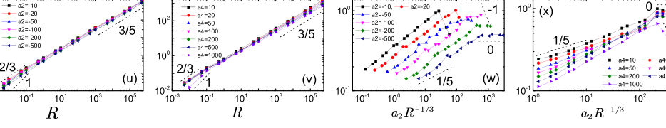
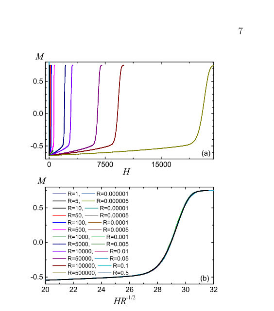
Summary. This paper identifies new universal scaling exponents for hysteresis in first-order phase transitions within a mean-field framework. It shows that different physical regimes, controlled by driving rates and noise, correspond to distinct universality classes. The study provides a unified scaling theory that explains previously observed non-universal behaviors as crossovers between fixed points.
Why it may be interesting. not directly relevant
Main problem. The study investigates the existence of universal scaling behavior and crossovers between different fixed points in the hysteresis of first-order phase transitions.
Main result. The authors discover a new scaling exponent of 3/5 for large driving rates in a quartic model and demonstrate that a single model can exhibit multiple universality classes (quadratic, cubic, and quartic) depending on driving rate and noise.
Method. The researchers use Renormalization Group (RG) theory for scaling analysis, Finite-Time Scaling (FTS) to treat the driving rate as a finite timescale, and numerical simulations to verify curve collapse.
Model / system. A dynamic mean-field quartic (phi^4) model governed by a Langevin equation with Gaussian white noise, driven by a linearly varying external field.
Key observables. Magnetization (M), coercivity (Hc), and the external field (H).
Important parameters / regimes. Driving rate (R), noise amplitude (sigma), reduced temperature (a2), and coupling constants (a4).
Assumptions / limitations. The analysis is restricted to mean-field models and assumes the absence of anomalous dimensions, which allows for full curve collapse.
Figures summary. Figures show the dependence of coercivity on driving rate, various rescaling plots (quadratic, cubic, quartic) demonstrating data collapse, and infinite-order rescaling showing a unified magnetization curve.
Paper structure. The paper introduces the problem of hysteresis scaling, defines the dynamic mean-field model, applies RG theory to identify fixed points and exponents, presents numerical verification of crossovers and curve collapse, and discusses the impact of noise and spatial extensions.
Phase transitions are divided into first-order phase transitions and continuous ones in current classification. While the latter shows striking phenomena of scaling and universality, the former is generically characterized by discontinuous jumps in extensive variables and pronounced hysteresis. Recent studies have demonstrated universal scaling behavior controlled by a cubic fixed point in first-order phase transitions. However, more recent investigations into the hysteresis in a dynamic mean-field quartic model driven through its first-order phase transitions have revealed new scaling exponents for different driving rates. Here, we discover a new exponent for large driving rates arising surprisingly from critical phenomena and show that, depending on the magnitude of the driving rates and on the absence or presence of noise, the same mean-field model remarkably exhibits several universality classes with definite universal scaling exponents governed by their corresponding fixed points through a systematic scaling analysis based on renormalization group theory. The theories and their various crossovers between different fixed points along with complete universal scaling of full curve collapse are verified by numerical results. This further confirms universal scaling in first-order phase transitions.
Authors: Johann Bock Severin, Malthe A. Marciniak, Rune Thinggaard Birke, Emil Hogedal, Andreas Nylander, Irshad Ahmad, Amr Osman, Janka Biznárová, Marcus Rommel, Anita Fadavi Roudsari, Jonas Bylander, Giovanna Tancredi, Christopher W. Warren, Svend Krøjer, Jacob Hastrup, Morten Kjaergaard
Type: both · Category: quantum information and computing · PDF: https://arxiv.org/pdf/2605.00626v1
Analysis basis: full PDF text, analyzed in chunks
Topic relevance: 🔥 QC/QI experiment 4/5 · 🔥 methods for driven-dissipative 4/5 · correlated / nonlocal dissipation 3/5
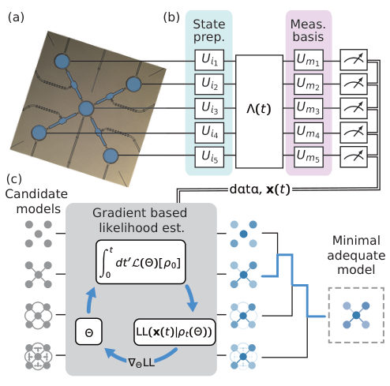
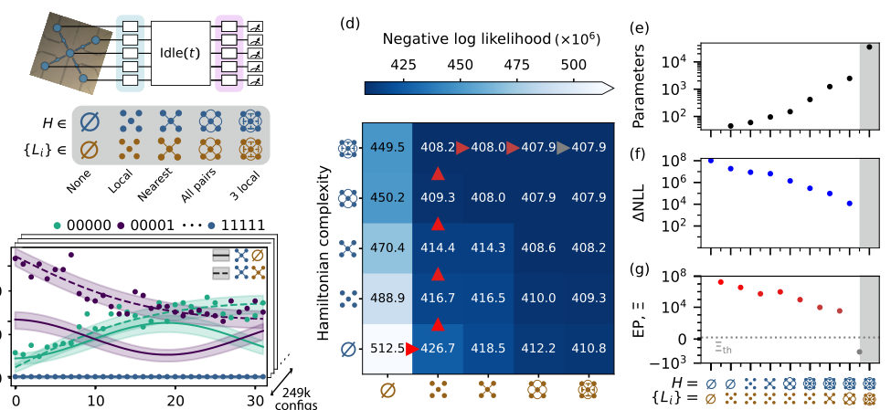
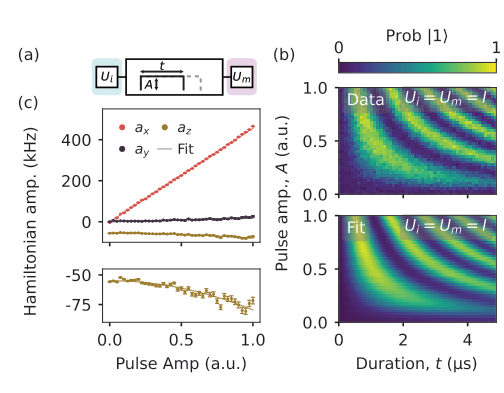
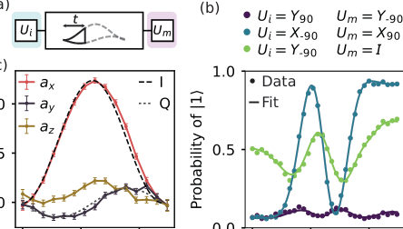
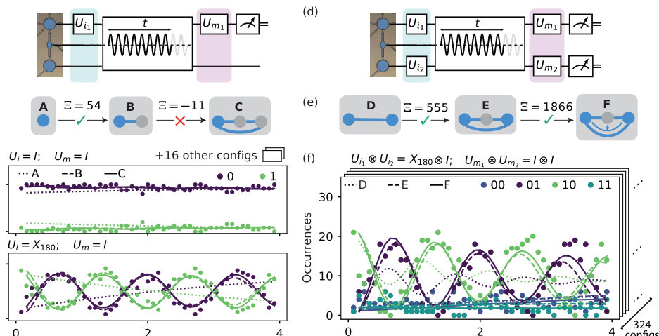
Summary. The authors present LIMINAL, a framework for learning the simplest Lindblad models that accurately describe a superconducting quantum processor. By using differentiable simulation and likelihood-ratio tests, the method can automatically determine the necessary level of interaction locality and dissipation. This allows for the automated characterization of both idling dynamics and complex, time-dependent control pulses.
Why it may be interesting. It provides a rigorous statistical method for model selection in open quantum systems, specifically addressing how to identify relevant noise and interaction terms in many-body Lindbladian dynamics.
Main problem. The challenge of identifying the minimal adequate Lindblad model for a multi-qubit processor, balancing model complexity against experimental and computational tractability.
Main result. The LIMINAL framework successfully identifies the simplest adequate model for a 5-qubit processor, recovering 3-local Hamiltonian terms and 2-local dissipation, while also reconstructing time-dependent pulse envelopes and detecting hidden coupler dynamics.
Method. A data-driven, likelihood-based inference framework (LIMINAL) using gradient-based Maximum Likelihood Estimation (MLE) with a differentiable ODE-based simulator and Likelihood-Ratio tests.
Model / system. A five-qubit superconducting quantum processor featuring fixed-frequency transmons and tunable couplers, modeled using the Lindblad master equation for both Hamiltonian and dissipative dynamics.
Key observables. Time-resolved tomographic data, bit-string outcomes, Pauli basis coefficients, and excited-state probabilities.
Important parameters / regimes. Hamiltonian coefficients, dissipation rates, qubit frequencies, relaxation times (T1), and dephasing times (T2).
Assumptions / limitations. The dynamics are assumed to be Markovian and describable by a Lindblad generator.
Figures summary. Figure 1 shows the device micrograph and LIMINAL workflow; Figure 2 illustrates the model selection path and likelihood landscapes; Figure 3 demonstrates single-qubit constant pulse reconstruction; Figure 4 shows time-dependent pulse reconstruction; Figure 5 and 6 detail hidden-qubit detection and the cryogenic setup.
Paper structure. The paper introduces the LIMINAL framework, describes the experimental superconducting platform, details the mathematical implementation of the differentiable simulator, presents results for idling dynamics, demonstrates reconstruction of driven single-qubit pulses, and concludes with tests for hidden degrees of freedom in couplers.
Accurate models of quantum processors are essential for understanding, calibrating, and improving their performance. In practice, model construction must balance physical detail against the experimental and computational effort required to reliably learn parameters. Compact descriptions therefore often rely on assumptions about which interactions, noise processes, or hidden degrees of freedom are relevant. Here we introduce LIMINAL, a data-driven framework for testing such assumptions and selecting minimal adequate Lindblad models. LIMINAL fits nested candidate models to time-resolved tomographic data and uses likelihood-ratio tests to decide when added physical mechanisms are warranted. We apply LIMINAL to a five-qubit superconducting processor, identifying an idling model with three-local Hamiltonian terms and two-local dissipation, while finding no support for three-local dissipation. We further apply it to recover driven single-qubit Hamiltonians, reconstruct a shaped-pulse Hamiltonian without assuming an analytic pulse model, and test hidden-qubit extensions in coupler-mediated dynamics, demonstrating the applicability of the framework for a wide range of tasks.
Authors: Rick P. A. Simon, Michael Meth, Francesco Martini, Peter Tirler, Andrew Jena, Martin Ringbauer, Luca Dellantonio
Type: both · Category: quantum information and computing · PDF: https://arxiv.org/pdf/2605.00682v1
Analysis basis: full PDF text, analyzed in chunks
Topic relevance: 🔥 QC/QI experiment 4/5 · 🔥 quantum measurements 4/5 · analog quantum simulation 2/5
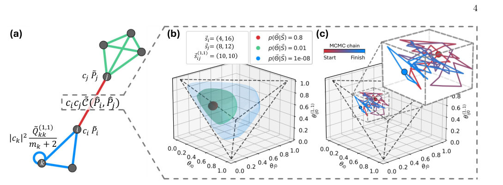
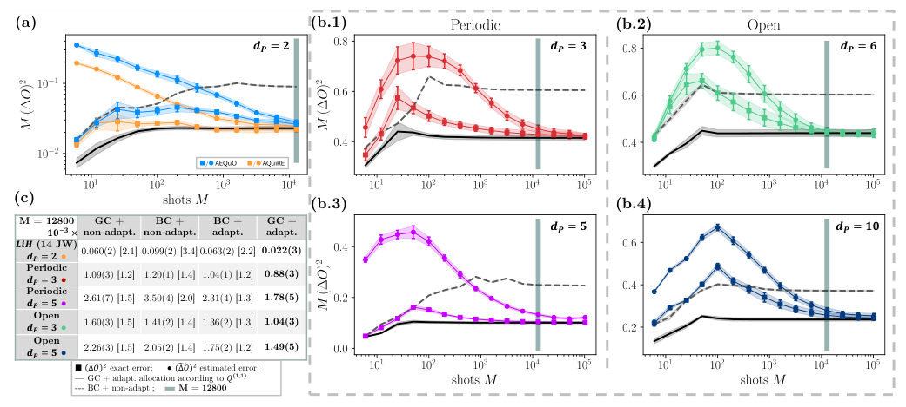
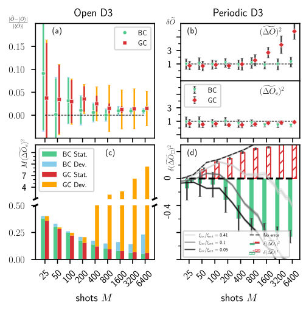
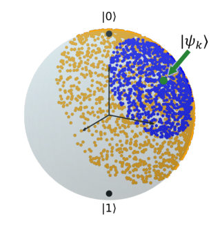
Summary. The paper presents AQUIRE, a new protocol for the efficient and error-aware estimation of observables on qudit-based quantum computers. By using adaptive Bayesian techniques, it can simultaneously estimate the mean and the impact of hardware noise, outperforming current state-of-the-art methods. The protocol's effectiveness is demonstrated through both numerical simulations and experiments on a trapped-ion quantum processor.
Why it may be interesting. It provides a practical framework for scaling quantum measurements from qubits to higher-dimensional qudits, which is essential for implementing complex many-body models like Lattice Gauge Theories on near-term hardware.
Main problem. The challenge of accurately estimating quantum observables and their associated errors on qudit-based quantum computers while accounting for both statistical and hardware-induced noise.
Main result. The authors introduce AQUIRE, a protocol that outperforms existing qubit-based methods (like AEQuO) by using adaptive shot allocation and general commutation strategies, and demonstrate its ability to quantify hardware noise on a trapped-ion processor.
Method. A Bayesian approach using a Dirichlet-like posterior distribution and MCMC sampling in the Hilbert space to estimate means and covariances, combined with an adaptive shot allocation algorithm.
Model / system. The protocol is applied to qudit-based quantum computers, specifically validated on a trapped-ion processor using $^{40}$Ca+ ions, and tested on models like U(1) Lattice Gauge Theory Hamiltonians.
Key observables. Expectation values of generalized Pauli operators, spin operators, and Hamiltonians (e.g., LGT and chemistry), along with their associated estimation errors.
Important parameters / regimes. Qudit dimension (d), measurement budget (M), local and entangling gate error rates (xi_loc, xi_ent), and the ratio of local to entangling error.
Assumptions / limitations. Assumes observables can be decomposed into a polynomial number of Pauli Strings and that hardware noise can be modeled as an independent depolarizing channel.
Figures summary. Figures show benchmarking against AEQuO, convergence of estimated error to true error, the commutation graph of observables, MCMC sampling trajectories, and experimental performance on trapped-ion hardware showing the trade-off between entangling gates and noise.
Paper structure. The paper introduces the problem of qudit measurement, presents the AQUIRE protocol and its Bayesian/MCMC mathematical framework, demonstrates numerical advantages via simulations, validates the error-awareness on trapped-ion hardware, and discusses future optimizations.
The accurate estimation of observables is a crucial task in quantum computing. Recent advances have highlighted the need for (a) specialized protocols for qudit-based devices, that include (b) error-aware strategies. Here, we present AQUIRE, the first protocol that can (a) accurately estimate both the mean and the error of an observable on qudit-based quantum computers. AQUIRE achieves this by constructing a Bayesian model to accommodate generalized Pauli operators. It is designed to continuously monitor the estimated average and the associated error of the observable, adjusting the subsequent measurements in real-time. Additionally, AQUIRE is (b) device- and experiment-specific error-aware, and accounts for hardware imperfections and experimental noise during the estimation process. We demonstrate AQUIRE's advantage via numerical simulations and showcase its ability to quantify the noise affecting the estimation by implementing it on a trapped-ion qudit quantum processor. By exploiting general commutation relations and overlap grouping measurements, our protocol is state-of-the-art when restricted to qubit-based quantum computers and extends this advantage to the qudit case.
Authors: Heiko Georg Menzler, Rafał Świętek, Mari Carmen Bañuls, Fabian Heidrich-Meisner
Type: theory · Category: disordered systems and neural networks · PDF: https://arxiv.org/pdf/2605.00094v1
Analysis basis: full PDF text, analyzed in chunks
Topic relevance: 🔥 scars & prethermalization 4/5 · entanglement & information structure 3/5 · non-equilibrium dynamics 3/5
Summary. This paper introduces a graph-theory-based measure called Graph-Energy Centrality to detect weak ergodicity breaking in large quantum systems. By analyzing the distribution of this measure, the authors can identify transitions into fractal or glassy regimes in models like the Rosenzweig-Porter and Triangular Lattice Gas. This method bypasses the size limitations of exact diagonalization, allowing for the study of much larger system sizes and the thermodynamic limit.
Why it may be interesting. It provides a powerful new diagnostic tool for identifying complex phase transitions like fading ergodicity and glassy dynamics in many-body systems where standard numerical methods fail due to exponential Hilbert space growth.
Main problem. Detecting and characterizing the onset of weak ergodicity-breaking transitions (wEBTs) and the breakdown of the Eigenstate Thermalization Hypothesis (ETH) in large quantum many-body systems.
Main result. The Graph-Energy Centrality (GEC) measure effectively captures wEBTs through characteristic changes in its distribution, providing a tool that works for much larger system sizes than traditional exact diagonalization.
Method. The authors use a graph-theoretical approach representing quantum systems in Fock space, employing analytical and semi-analytical methods to calculate GEC moments for large-scale models.
Model / system. The study utilizes the Rosenzweig-Porter Model (RPM), the Quantum Sun Model (QSM), and a kinetically constrained Triangular Lattice Gas (TLG) model.
Key observables. Graph-Energy Centrality (GEC) distribution, variance of GEC, gap ratio (r_n), and eigenstate entanglement entropy (SEE).
Important parameters / regimes. The parameter gamma in RPM, the coupling strength alpha in QSM, and the interaction strength V/t0 in the TLG model.
Assumptions / limitations. The analytical approach for GEC moments assumes the Hamiltonian is scaled to be traceless and of unit variance; some calculations assume small fluctuations in spin positions.
Figures summary. Figure 1 shows a Fock-space graph of the TLG; Figures 2 and 3 display GEC distributions and variance for RPM and QSM; Figure 5 shows ETH stability via diagonal matrix elements; Figure 6 illustrates the TLG model and its gap ratio/entanglement entropy.
Paper structure. The paper introduces the GEC measure, applies it to the RPM to show transition capture, extends the analysis to the QSM to verify ETH validity, and finally demonstrates its utility in identifying glassy dynamics in the TLG model.
We study the onset of weak ergodicity violations in closed quantum many-body systems and focus on cases in which they occur through a transition that is controlled by a model parameter. Our analysis is based on representing quantum systems in Fock space and utilizes graph-theoretical measures. As a main result, we show that the recently introduced graph-energy centrality captures known weak ergodicity-breaking transitions via characteristic changes in its distribution. While most numerical tools are limited to small system sizes, our measure can be calculated analytically for large systems of many hundreds of sites and in some cases, even in the thermodynamic limit. We conclude by demonstrating the applicability of our Fock-space based measure to a kinetically constrained quantum model, where we find evidence for a weak ergodicity-breaking transition accompanied by glassy dynamics.
Authors: Martijn Janse, M. Luisa Mattana, Julian van Doorn, Eli van der Bent, Richard Wagner, Robert Smit, Bas Hensen
Type: experiment · Category: other · PDF: https://arxiv.org/pdf/2605.00090v1
Analysis basis: full PDF text, analyzed in chunks
Topic relevance: 🔥 spintronics-quantum-optics interface 4/5 · QC/QI experiment 2/5 · quantum measurements 2/5 · quantum optics experiment 2/5
Summary. The paper demonstrates a room-temperature, on-chip magnetic trap capable of levitating ferromagnetic microparticles. This platform overcomes the limitations of previous levitation methods and offers a scalable architecture for high-frequency mechanical sensing and potential coupling to quantum spin systems.
Why it may be interesting. It presents a scalable platform for macroscopic quantum mechanics and provides a clear pathway for coupling mechanical motion to solid-state spin qubits for ground-state cooling and quantum sensing.
Main problem. The need for a scalable, integrable, and room-temperature platform for levitating micro-to-nanoscale objects in vacuum while avoiding the decoherence and mass limits of optical and electrical traps.
Main result. Demonstration of an on-chip magnetic Paul trap that stably levitates a nanogram-scale ferromagnetic microsphere at room temperature with high-frequency librational modes.
Method. The researchers used an on-chip platform with gold current loops to create a rotating magnetic field, detecting particle motion via back-scattered laser light and analyzing the power spectral density.
Model / system. An on-chip magnetic Paul trap featuring gold concentric current loops on a silicon/glass chip, levitating a NdFeB ferromagnetic microsphere in a vacuum environment.
Key observables. Translational and librational eigenfrequencies, damping rates, micromotion sidebands, and the temperature dependence of magnetization.
Important parameters / regimes. Nanogram mass scale, 6.5 micrometer particle radius, librational frequencies exceeding 10 kHz, and the sideband-resolved regime.
Assumptions / limitations. Assumes the free-molecular regime for gas damping and uses a steady-state energy balance model for thermal dynamics.
Figures summary. Figure 1 shows the trap design and simulated potential; Figure 2 displays the experimental setup and power spectral density; Figure 5 illustrates the prospects for spin-mechanical coupling with NV centers; Figure 9 shows finite-element simulations of eddy current damping.
Paper structure. The paper introduces the motivation for magnetic levitation, describes the on-chip trap design and experimental setup, presents the characterization of mechanical modes and thermal dynamics, analyzes dissipation mechanisms, and concludes with prospects for quantum spin-mechanical coupling.
Levitation of microscopic objects in vacuum combines exceptional environmental isolation with precise control of their dynamics, pushing the limits of sensing and macroscopic quantum physics. In particular, magnetic levitation allows a large range of particle sizes, while avoiding detrimental effects from high-intensity optical trapping beams and electric field noise. However, existing diamagnetic and Meissner levitation approaches are typically constrained by low mechanical eigenfrequencies, limited integrability with other systems due to bulky coils or magnets, and, for Meissner levitation, the need for cryogenic operation. Here, we demonstrate a room-temperature on-chip magnetic levitation platform capable of stably levitating a nanogram (6.5 micrometer radius) ferromagnetic microsphere. The platform is scalable and tunable, and supports librational modes with eigenfrequencies exceeding 10 kHz. Further miniaturization and coupling to solid-state spin qubits could enable cooling to the quantum ground state. Beyond quantum experiments, this architecture enables integrated precision sensing and studies of isolated ferromagnet thermodynamics.
Authors: Christopher Hoffman, Tobias Johnson, Matthew Junge, Josh Meisel
Type: theory · Category: statistical mechanics · PDF: https://arxiv.org/pdf/2605.00207v1
Analysis basis: full PDF text, analyzed in chunks
Topic relevance: 🔥 non-equilibrium universality 4/5 · non-equilibrium dynamics 3/5 · driven-dissipative phase transition 2/5
Summary. This paper provides the first rigorous mathematical proof that the 1D activated random walk model exhibits self-organized criticality, confirming that its driven-dissipative state matches its fixed-energy critical state. It resolves a long-standing issue of non-universality found in previous models like the Abelian Sandpile by showing that ARW mixes quickly enough to reach the true critical density.
Why it may be interesting. not directly relevant
Main problem. The paper addresses the lack of mathematical proof for the universality conjecture in self-organized criticality (SOC), specifically whether driven-dissipative systems self-organize into a critical state identical to fixed-energy models.
Main result. The authors prove that for the 1D activated random walk (ARW) model, the stationary density converges to the critical density of the fixed-energy version, and that the system exhibits heavy-tailed avalanches and fast mixing.
Method. The proof utilizes odometer analysis, stochastic embedding into a process resembling (2+1)-dimensional directed percolation, and a probabilistic union bound argument.
Model / system. The 1D Activated Random Walk (ARW) model, a stochastic sandpile where particles can be 'active' or 'sleeping' and move via random walks with a sleep/wake mechanism.
Key observables. Critical density (rho_c), avalanche size/area, mixing time, and stationary density (rho_s).
Important parameters / regimes. Sleep rate (lambda), dimension (d=1), and particle density (rho).
Assumptions / limitations. The primary results are restricted to the one-dimensional (1D) case.
Figures summary. Figure 1 shows the non-linear density profile of the Abelian Sandpile model demonstrating its failure to reach the critical density; Figure 2 shows the 'hockey-stick' density profile of the ARW model reaching and staying at the critical density.
Paper structure. The paper introduces the problem of SOC universality, contrasts the ARW model with the Abelian Sandpile, presents mathematical proofs for density and mixing time conjectures, and discusses the existence of heavy-tailed avalanches.
To explain the ubiquity of power laws and fractals in nature, Bak, Tang, and Wiesenfeld formulated simple conditions for a system to self-organize into a critical state. Dickman, Muñoz, Vespignani, and Zapperi postulated that the self-organized critical state matches the critical state in corresponding fixed-energy models undergoing traditional phase transitions. Although the theory has been applied broadly over the past five decades, no mathematical model has been proven to exhibit the conjectured behavior. Indeed, the originally proposed abelian sandpile model displays nonuniversal behavior stemming from its slow mixing. Marking the first result of its kind, we prove that the 1-d activated random walk model mixes quickly into a stationary state with power-law avalanches and limiting critical density that equals the critical value for the fixed-energy version.
Authors: Marcin Płodzień, Jan Chwedeńczuk
Type: theory · Category: quantum information and computing · PDF: https://arxiv.org/pdf/2605.00770v1
Analysis basis: full PDF text, analyzed in chunks
Topic relevance: 🔥 entanglement & information structure 4/5 · non-equilibrium dynamics 3/5 · scars & prethermalization 2/5
Summary. The paper demonstrates that topological phases can protect local quantum information from the scrambling effects of many-body dynamics. By utilizing Majorana zero modes, the authors show that a nonzero boundary Quantum Fisher Information can be maintained for exponentially long times. This effect is characterized by a distinct asymmetry in encoding channels that is robust to both disorder and interactions.
Why it may be interesting. This work is highly relevant for many-body dynamics and quantum information as it proposes a way to use topological protection to preserve metrological sensitivity, offering a robust protocol for local information encoding and readout in noisy environments.
Main problem. In many-body systems, unitary dynamics typically cause locally encoded information to delocalize and vanish. The authors seek to demonstrate how topological phases can prevent this dispersal to provide a form of topological metrological memory.
Main result. The authors show that in the topological phase of a Kitaev chain, a Majorana zero mode pins the boundary Quantum Fisher Information (QFI) to a nonzero plateau that persists for exponentially long times. They identify a unique boundary encoding-axis asymmetry as a robust diagnostic for this topological protection.
Method. The study uses an analytical approach via Bogoliubov-de Gennes formalism and Jordan-Wigner transformation, complemented by real-time numerical simulations of finite-size chains to test robustness against disorder and interactions.
Model / system. An anisotropic XY spin-1/2 chain with open boundaries, which maps to a 1D Kitaev chain (topological superconductor) under the Jordan-Wigner transformation.
Key observables. Local Quantum Fisher Information (QFI), boundary-axis asymmetry (comparing R_y and R_x encoding channels), and the Majorana localization length.
Important parameters / regimes. Transverse field (h), anisotropy (gamma), system size (L), Majorana localization length (xi), and the energy scales of the bulk gap and Majorana splitting.
Assumptions / limitations. The protocol assumes a specific time-averaging window to isolate stationary signals from dephasing; the readout is assumed to be local at the boundary to avoid the non-locality of the Jordan-Wigner string.
Figures summary. The notes do not provide specific figure descriptions, though they mention the presence of figures illustrating the boundary QFI plateau and the asymmetry between encoding channels.
Paper structure. The paper introduces the problem of information delocalization, defines the XY/Kitaev model, provides analytical derivations for the QFI and its topological plateau, presents numerical evidence for robustness against disorder and interactions, and concludes with scaling analysis near the phase transition.
In many-body quantum systems, unitary dynamics generically delocalize locally encoded information, causing single-site metrological sensitivity to vanish. We analytically demonstrate that a topological phase can prevent this dispersal. In the open Kitaev chain, a Majorana zero mode fixes the boundary quantum Fisher information (QFI) at a nonzero plateau that persists for times exponentially long in system size. We derive exact analytical expressions for the local QFI and identify the mechanism as the spatial separation of the two Majorana quadratures to opposite ends of the chain. This separation produces a boundary encoding-axis asymmetry that distinguishes topological boundary memory from a generic localized subgap signal. We show numerically that the asymmetry is robust to moderate quenched on-site disorder, while the boundary plateau remains visible under parity-preserving interactions in finite-size real-time simulations. The protocol requires only product-state initialization, Hamiltonian evolution, and single-site readout.
Authors: Oliver Hideg, Sofia Salvatore, Luca Salasnich
Type: theory · Category: quantum gases · PDF: https://arxiv.org/pdf/2605.00571v1
Analysis basis: full PDF text, analyzed in chunks
Topic relevance: 🔥 Keldysh / 2PI / non-Gaussian methods 4/5 · analog quantum simulation 2/5 · non-equilibrium dynamics 2/5
Summary. This paper develops a theoretical method to calculate quantum corrections to the dynamics of two coupled Bose-Einstein condensates by focusing solely on population imbalance. It demonstrates that this approach is superior to the standard phase-only method when interactions are strong. The results include explicit expressions for corrected potentials and frequencies that match exact numerical results.
Why it may be interesting. It provides a new theoretical framework for describing many-body dynamics in the strong interaction regime, offering a more robust alternative to standard phase-only approximations in bosonic Josephson junctions.
Main problem. Investigating quantum corrections to the Josephson dynamics of two weakly coupled Bose-Einstein condensates using a population-imbalance-only approach.
Main result. The population-imbalance approach provides a more accurate description of quantum-corrected Josephson frequency in the strong interaction regime compared to the traditional phase-only approach.
Method. The authors use a one-loop quantum effective action and a covariant background-field method to derive an effective potential and mass, validated via exact diagonalization of the Bose-Hubbard model.
Model / system. A two-site Bose-Hubbard model representing a bosonic Josephson junction consisting of two weakly coupled Bose-Einstein condensates.
Key observables. Effective potential V_eff(z), effective mass m_eff(z), quantum-corrected Josephson frequency Omega_J, fractional imbalance, and phase difference.
Important parameters / regimes. Dimensionless interaction parameter Lambda = UN/2J, total number of bosons N, tunneling energy J, and interaction strength U.
Assumptions / limitations. Assumes weakly coupled condensates and small-amplitude oscillations around the Josephson fixed point.
Figures summary. Figure 1 compares the exact, mean-field, and quantum effective mean-field evolution of the fractional imbalance and phase difference.
Paper structure. The paper begins with the derivation of a population-imbalance-only Lagrangian from a two-variable action, proceeds to compute one-loop quantum corrections using the background-field method, and concludes with numerical validation against exact diagonalization.
We investigate quantum corrections to the Josephson dynamics of two weakly coupled Bose-Einstein condensates using the population imbalance as the sole dynamical variable. Starting from the two-variable action, we derive the imbalance-only Lagrangian with a position-dependent mass and quantize it via symmetric operator ordering. The leading quantum corrections to the classical potential and mass are computed via the one-loop quantum effective action, using a covariant background-field method that fully accounts for the coordinate dependence of the mass. This yields explicit expressions for the effective potential and the effective mass, from which we derive the quantum-corrected Josephson frequency. Numerical comparison with exact diagonalization of the two-site Bose-Hubbard model shows that the imbalance-only formulation outperforms the complementary phase-only approach in the regime of strong interactions, which is the natural domain of validity of the population-imbalance description.
Authors: Davide Bertolusso, C. J. Bolech, Thierry Giamarchi
Type: theory · Category: quantum gases · PDF: https://arxiv.org/pdf/2605.00679v1
Analysis basis: full PDF text, analyzed in chunks
Topic relevance: 🔥 Keldysh / 2PI / non-Gaussian methods 4/5 · non-equilibrium dynamics 3/5
Summary. This paper uses Keldysh field theory to study how particles and entropy flow through a superfluid quantum point contact. It demonstrates that the non-monotonic, oscillatory behavior of the entropy current is a direct consequence of Multiple Andreev Reflection processes. The work highlights the necessity of including particle-hole asymmetry to accurately model heat and entropy transport.
Why it may be interesting. It provides deep insight into non-equilibrium thermodynamics and transport in many-body systems, specifically how microscopic pairing mechanisms (MAR) manifest as macroscopic oscillatory transport properties in superfluid/superconducting junctions.
Main problem. The study investigates the mechanisms of particle and entropy transport through a superfluid quantum point contact, specifically focusing on the origin of oscillatory behavior in the entropy current.
Main result. The authors find that entropy current oscillations are driven by the activation of successive Multiple Andreev Reflection (MAR) processes rather than the divergence of the local density of states, and that quadratic dispersion is essential to capture heat transport.
Method. A Keldysh field-theory approach is used to compute out-of-equilibrium steady-state currents, utilizing a Nambu-spinor representation and frequency-space analysis.
Model / system. The system consists of two ultra-cold neutral Fermi-gas reservoirs in a superfluid state connected by a quantum point contact, modeled using BCS mean-field theory and a tunneling Hamiltonian with quadratic dispersion.
Key observables. Particle current (JN), heat current (JH), and entropy current (JS).
Important parameters / regimes. Chemical potential difference (delta-mu), temperature difference (delta-T), superconducting gap (delta), and junction transparency (T).
Assumptions / limitations. The reservoirs are assumed to be in separate local equilibria, and the study focuses on the DC component of the currents, averaging out AC components.
Figures summary. Schematics of the junction and Andreev processes (Fig 1, 2, 3, 10); comparison of LDoS for linear vs. quadratic dispersion (Fig 5); current behavior in different junction types (Fig 6); and the persistence of oscillations in a truncated model (Fig 12).
Paper structure. The paper introduces the transport problem, describes the Keldysh formalism and Hamiltonian, analyzes the role of dispersion and Andreev reflections, presents results for SS and SN junctions, and compares findings with experimental cold-atom data.
We study the matter and entropy transport between two ultra-cold neutral Fermi-gas reservoirs linked by a quantum point contact under a chemical-potential gradient. We describe the two leads with a BCS mean-field model and derive the current-bias characteristics for both particle and entropy transport. We compute the out of equilibrium steady-state currents by using the Keldysh formalism. In accordance with previous works in the literature, we confirm the well-known behavior for the particle current and extend the computation to the entropy current in the BCS regime. The entropy current shows an oscillatory behavior at low voltage in the ballistic junction limit. We analyze the results for a wide range of values of the junction's transparency. We also compare our findings with experimental results in cold atomic gases in the unitary regime.
Authors: Pravy Prerana, Sascha Wald
Type: theory · Category: quantum information and computing · PDF: https://arxiv.org/pdf/2605.00772v1
Analysis basis: full PDF text, analyzed in chunks
Topic relevance: 🔥 entanglement & information structure 4/5 · non-equilibrium dynamics 2/5
Summary. The paper proposes a new entanglement measure, 'source-target entanglement,' that works for quantum walks on irregular networks where standard methods fail. It reveals that the maximum entanglement a network can support is limited by its graph-theoretic matching size and that higher connectivity or clustering can actually hinder entanglement generation.
Why it may be interesting. This work provides a new way to characterize quantum correlations in complex topologies, which is highly relevant for understanding how quantum information spreads in non-regular quantum networks and many-body systems with complex connectivity.
Main problem. Quantifying entanglement in discrete-time quantum walks on irregular or complex networks where traditional coin-walker entanglement is not well-defined due to varying node degrees.
Main result. The authors introduce 'source-target entanglement' and prove that the entanglement capacity of a graph is upper-bounded by the logarithm of the size of the largest matching in its bipartite double cover, finding that increased connectivity and clustering actually suppress entanglement.
Method. The study uses a bipartite double cover construction to define a new entanglement measure and employs graph theory (matching theory) alongside numerical simulations on Erdős–Rényi and Barabási–Albert random graphs.
Model / system. Discrete-time quantum walks (DTQWs) on complex networks, specifically using symmetric digraphs, Erdős–Rény_en (ER) graphs, and Barabási–Albert (BA) graphs with Grover coin dynamics.
Key observables. Source-target entanglement (S_st), coin-walker entanglement, and graph matching size.
Important parameters / regimes. Network connectivity (p for ER, m for BA), clustering coefficient, and time evolution steps.
Assumptions / limitations. The study relies on the bipartite double cover as a theoretical proxy for the coin-walker division and focuses on symmetric digraphs.
Figures summary. Figure 1 illustrates the bipartite double cover construction and the impact of clustering; Figure 2 compares different coin assignments; Figure 3 shows the time evolution of entanglement and its anti-correlation with the clustering coefficient in random graphs.
Paper structure. The paper introduces a new entanglement measure for irregular graphs, establishes a theoretical upper bound based on graph matchings, demonstrates the tightness of this bound, and then explores how network topology (connectivity and clustering) affects entanglement dynamics in random graph models.
Discrete-time quantum walks provide a natural framework for quantum transport on complex networks. On regular structures, coin-walker entanglement has been widely used to characterize quantum transport and to support quantum algorithmic protocols. However, this notion relies on a fixed Hilbert space factorization separating coin and position and is therefore not directly applicable to more complex, irregular structures. Here we introduce an entanglement measure for general networks based on a bipartition that assigns each node two roles, acting as both a source and a target. The resulting bipartition defines the source-target entanglement, a measure for general networks, motivated by coin-walker entanglement. We show that the connectivity of the network imposes an upper bound on this entanglement and identify graph matchings as the underlying structure governing entanglement generation. We further illustrate that in random graphs improving graph connectivity reduces the attainable entanglement, establishing a structure-dependent constraint on quantum correlations.
Authors: Kh. P. Gnatenko, R. O. Hredil, V. Y. Pinchuk, M. Z. Seniak, Yu. T. Shevchuk
Type: theory · Category: quantum information and computing · PDF: https://arxiv.org/pdf/2605.00259v1
Analysis basis: full PDF text, analyzed in chunks
Topic relevance: 🔥 entanglement & information structure 4/5 · non-equilibrium dynamics 2/5
Summary. This paper provides an analytical framework to calculate the entanglement distance in variational quantum circuits. It proves that as the circuit depth increases, the influence of neighboring qubits spreads, effectively increasing the entanglement-dependent neighborhood. The theoretical results are highly consistent with numerical simulations of quantum circuits.
Why it may be interesting. This work is relevant for understanding the dynamics of information spreading and entanglement growth in parameterized circuits, which is fundamental to the study of many-body dynamics and the performance of variational quantum algorithms.
Main problem. The study aims to quantify the 'entanglement distance' and characterize the spreading of quantum correlations in variational quantum circuits as circuit depth increases.
Main result. The authors derived analytical recurrence relations for Pauli expectation values and demonstrated that increasing circuit depth expands the neighborhood of qubits that influence a target qubit's local observables.
Method. The researchers used the Heisenberg picture to evolve Pauli operators backward through the circuit and applied the Clifford property of CZ gates to derive exact analytical expressions, which were then verified via Qiskit numerical simulations.
Model / system. The model consists of two-qubit and multi-qubit systems arranged in a closed one-dimensional chain with periodic boundary conditions, utilizing a layered variational ansatz of RY rotations and CZ entangling gates.
Key observables. Entanglement Distance (EED), Pauli expectation values (X, Y, Z), and two-qubit correlations.
Important parameters / regimes. Circuit depth (number of layers), rotation angles (theta), and the distinction between local and global rotation parameters.
Assumptions / limitations. The system starts in the |00...0> state, and the circuit transformations are strictly real, implying the Y-component of the Bloch vector is zero.
Figures summary. Figure 1 shows the circuit architecture; Figures 2-4 present surface plots of EED for two qubits; Figure 5 shows a 5-qubit chain circuit; Figures 6-7 show entanglement distance and correlation landscapes as functions of rotation angles.
Paper structure. The paper introduces the entanglement distance concept, details the two-qubit analytical derivation using the Heisenberg picture, extends the analysis to a 1D chain to show correlation spreading, and concludes with numerical validation and comparison of local vs. global rotation effects.
We study the entanglement distance of variational quantum states for two-qubit and multi-qubit systems. These states are constructed using variational quantum circuits with $R_Y$ rotations and entangling $CZ$ gates.For the two-qubit case, we analytically derive recurrence relations for expectation values of Pauli observables using. This approach allows us to analytically calculate quantum correlators and evaluate the entanglement distance depending on the circuit parameters and depth. The analysis were extended to a closed one-dimensional chain of $N$ qubits. It is shown that with increasing circuit depth, more qubits influence a given qubit, which reflects the spreading of quantum correlations in the system. For a closed one-dimensional chain of $N$ qubits, explicit analytical expressions are derived for the case of two layers. The results are compared with numerical simulations performed using quantum programming tools. The results agree with the theoretical predictions.